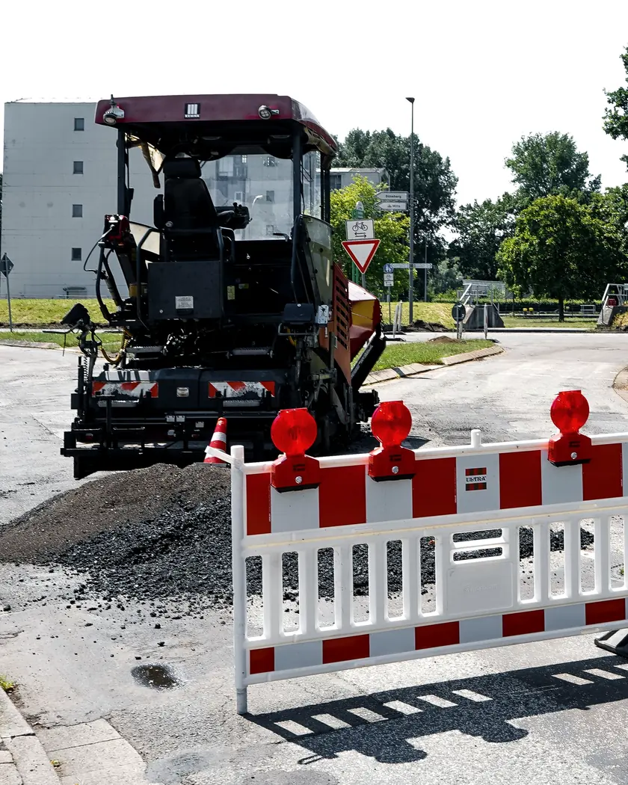

01
Ceļu būvdarbu vadīšanaРуководство дорожными работами
Organizējam darbus ceļa objektā: secību, tehniku, materiālus un termiņus. Kārtojam būvdarbu žurnālu un segto darbu aktus.Организуем работы на дорожном объекте: порядок, технику, материалы и сроки. Ведём журнал работ и акты скрытых работ.
- Darbu secība un grafiksПорядок и график работ
- Būvdarbu žurnālsЖурнал работ
- Segto darbu aktiАкты скрытых работ